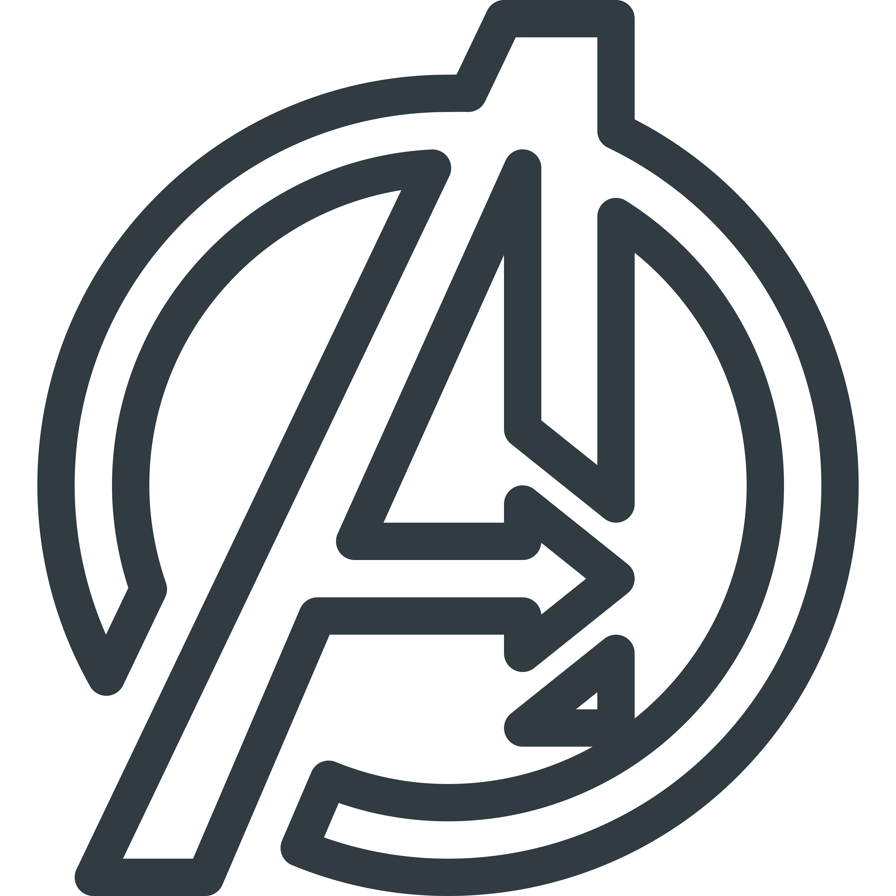

Bakalářský titul - Český jazyk a literatura, Speciální pedagogika
2010-2014 Gymnázium Nad Štolou
Všeobecné gymnázium v Praze
Pracovní zkušenosti
12/2019-dosud ARBES Technologies, a.s. Asistentka
Příprava a kontrola smluvní dokumentace,
příprava podkladů pro účast ve veřejných zakázkách,
korektury textů,
skenování a archivace dokumentů,
správa firemních telefonních tarifů,
podpora marketingových aktivit,
správa firemních webových stránek,
výpomoc s HR agendou.
07/2018-11/2019 ARBES Technologies, a.s. Hlavní recepční
Zajišťování občerstvení, uvádění návštěv,
správa kuchyněk, objednávky kancelářských potřeb,
vyřizování příchozích telefonních hovorů a pošty,
skenování dokumentů, správa archivu
správa firemních telefonních tarifů.
09/2015-04/2018 FootLocker EU Shift Leader
Prodej obuvi a doplňkového zboží,
příprava slevových akcí,
delegování úkolů a kontrola jejich plnění,
nábor zaměstnanců a školení nových i stávajících kolegů,
výpomoc s administrací, plánování směn,
výpomoc s organizací skladu,
příprava a úklid prodejny.
Jazykové znalosti
Český jazyk: C2
Anglický jazyk: B2
Německý jazyk: A1
Finština: A1
Zájmy
Cestování
Prozatím nejoblíbenějšími destinacemi jsou Finsko, Dánsko a
Skotsko.
Četba
Mezi moje nejoblíbenější knihy patří Harry Potter a nejlepší
spisovatel je Stephen King. Ráda si ale přečtu i dobrou detektivku nebo
thriller od jiného autora.
Catperson
Doma mám dva kocoury, starší je Fury (2 roky) a mladší Groot
(4 měsíce).

Filmy
Jak již jména mých kocourů napovídají, nesmí mi uniknout žádná
Marvelovka :) a samozřejmě maraton HP filmů bych mohla dělat každý
měsíc!
Pohyb
Ráda se protáhnu u jógy, nebo vyrazím o víkendu s přítelem na
výlet. Před nedávnem jsem začala běhat, ale zatím je to spíš trápení než
radost.